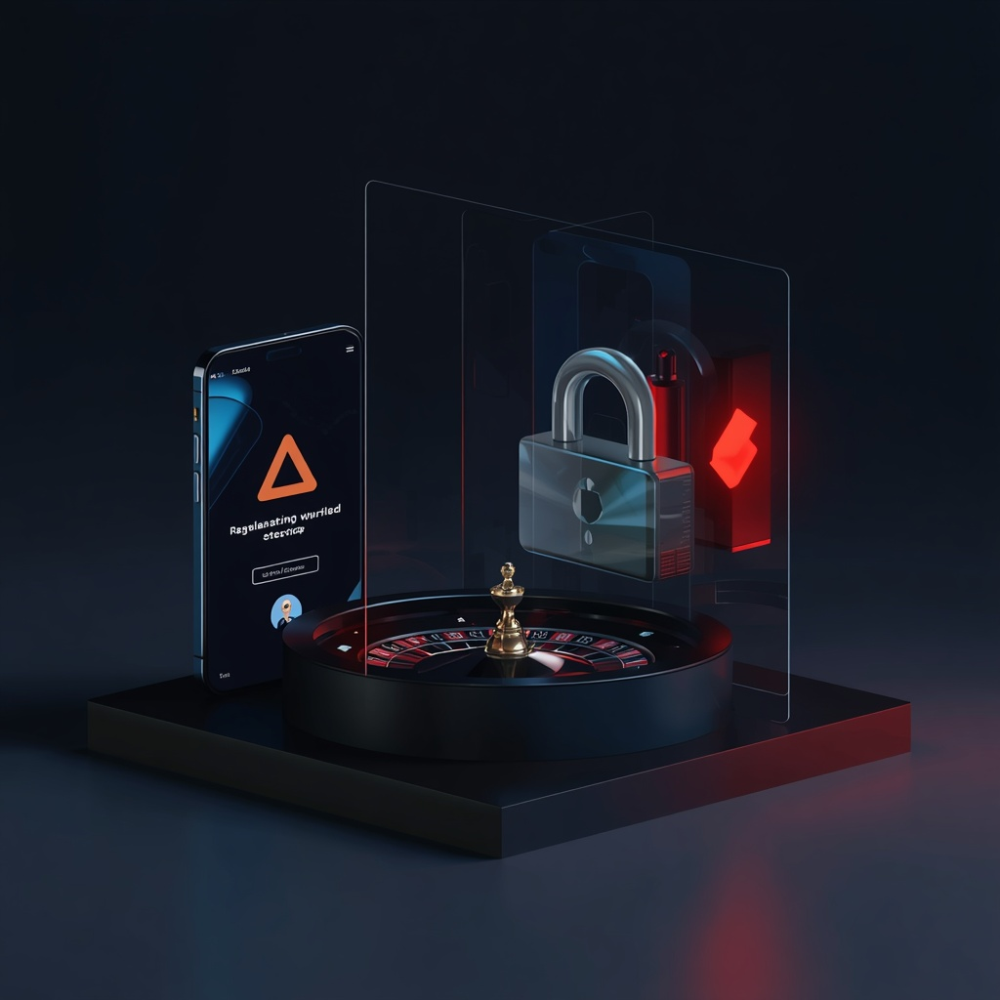
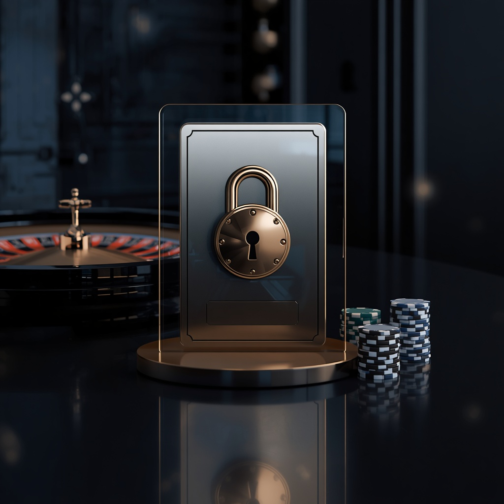
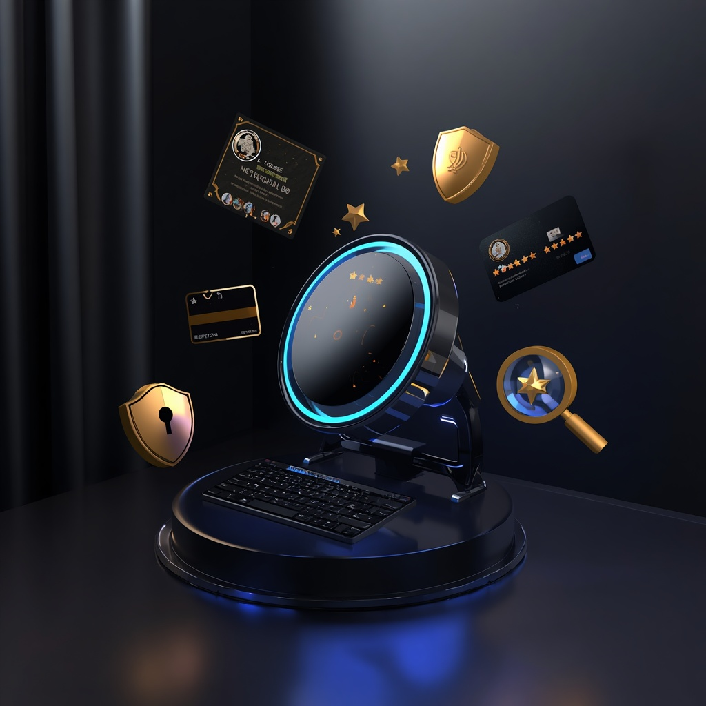
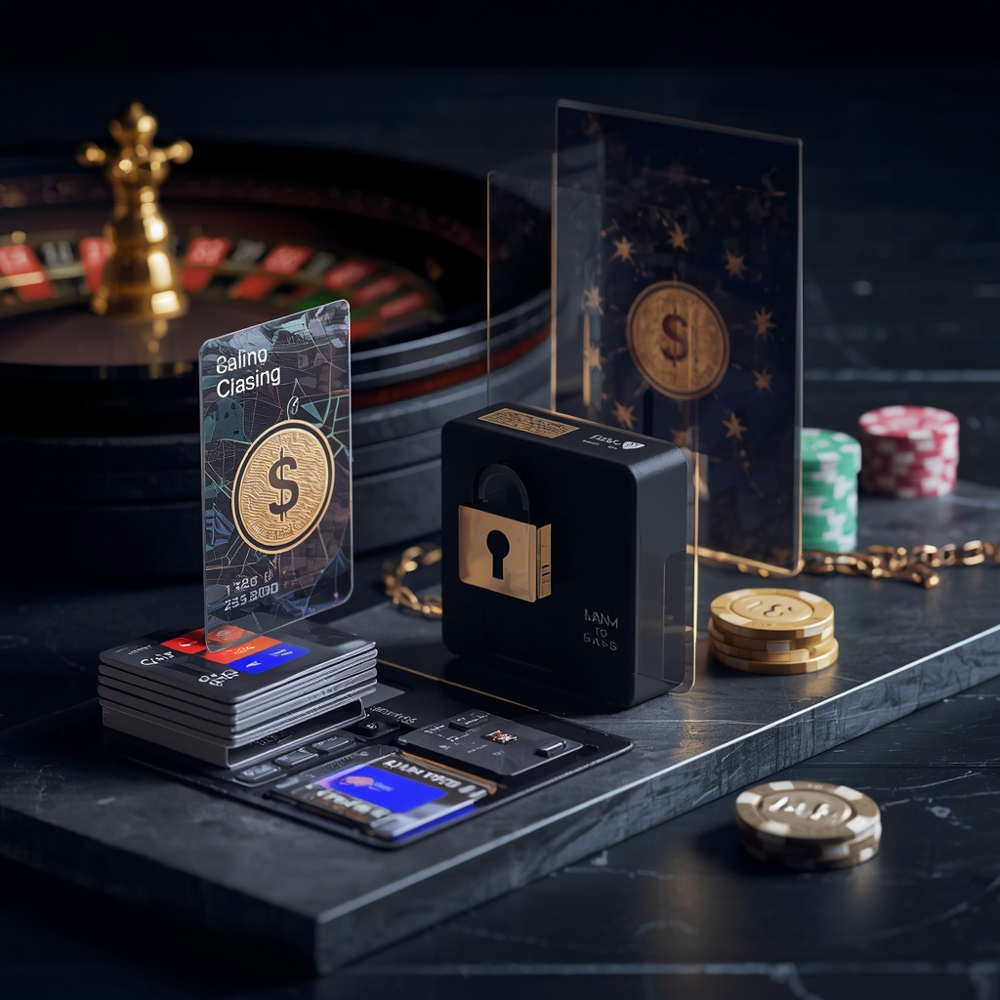
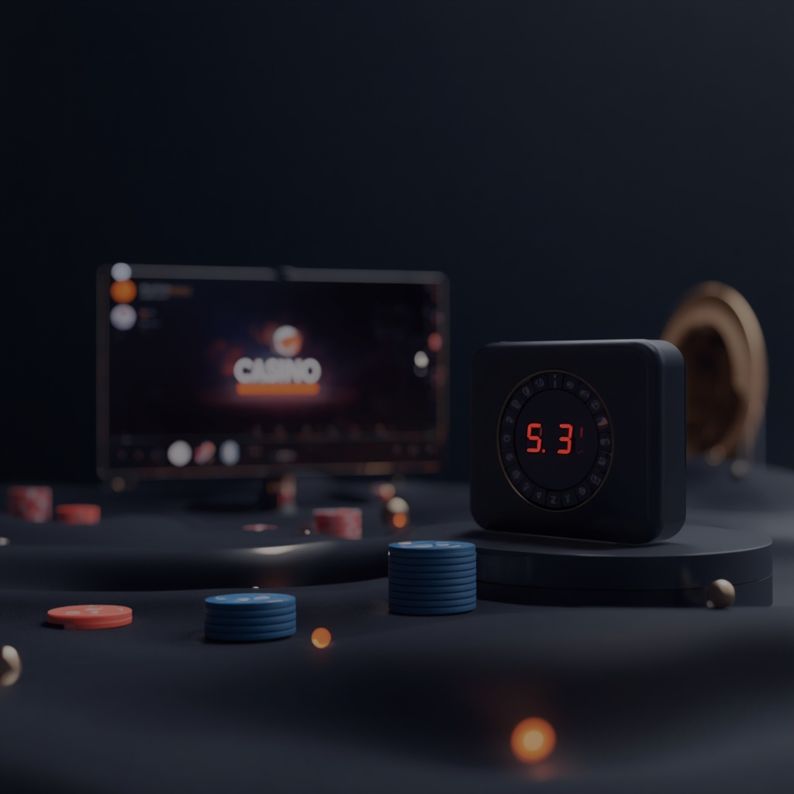

Begrebet bruges ofte sammen med udtryk som casino uden dansk licens og casino uden MitID – men de tre betyder ikke nødvendigvis det samme. Denne guide gennemgår, hvordan ROFUS fungerer, hvad et casino uden dansk licens indebærer, og hvilke forhold du bør undersøge, før du spiller.
Hvad er et casino uden ROFUS?
Et casino uden ROFUS er typisk et online casino uden dansk tilladelse til at udbyde onlinekasino. Danske casinoer med tilladelse fra Spillemyndigheden skal kontrollere spillerens status i ROFUS via MitID eller en anden godkendt elektronisk identifikation.
Et udenlandsk casino uden dansk licens er ikke en del af dette system. Det betyder dog ikke, at casinoet slet ikke kontrollerer din identitet – mange internationale udbydere har deres egne KYC-procedurer, hvor du skal dokumentere navn, alder, adresse eller betalingsmiddel.
Casino uden ROFUS betyder altså uden forbindelse til det danske ROFUS-system – ikke en garanti for anonymitet.
Hvad er ROFUS, og hvordan fungerer det?
ROFUS – Register Over Frivilligt Udelukkede Spillere – administreres af Spillemyndigheden. Formålet er at give spillere mulighed for frivilligt at begrænse eller stoppe deres adgang til spil: en kort pause på 24 timer, udelukkelse i 1, 3 eller 6 måneder, eller endelig udelukkelse.
ROFUS omfatter blandt andet onlinekasino, online betting, væddemål i fysiske butikker og adgang til landbaserede kasinoer i Danmark. Når du er registreret, skal danske spiludbydere forhindre dig i at spille på de omfattede tjenester.
ROFUS er først og fremmest et værktøj til ansvarligt spil. Er spil blevet svært at kontrollere, bør en registrering ses som beskyttelse – ikke som en teknisk forhindring, der blot skal omgås.


Hvorfor bruger danske casinoer MitID?
Spiludbydere, der ønsker dansk tilladelse til onlinekasino eller betting, skal kunne anvende en godkendt elektronisk identifikation. I Danmark bruges MitID som den almindelige løsning – det gør det muligt for casinoet at identificere spilleren og kontrollere blandt andet ROFUS-status.
Et dansk licenseret casino er underlagt danske krav til spilleridentifikation, ROFUS-kontrol, ansvarligt spil, bonusser, registrering af spilaktivitet samt sikkerhed og forbrugerbeskyttelse. Et internationalt casino uden dansk licens følger i stedet reglerne fra sin egen licensjurisdiktion.
Er casinoer uden ROFUS lovlige?
Dette kræver lidt nuance frem for et simpelt ja eller nej. Et udenlandsk casino kan have en gyldig international spillelicens og være lovligt etableret i sit licensland. Det giver dog ikke automatisk ret til aktivt at markedsføre og udbyde spil på det danske marked – det kræver en tilladelse fra Spillemyndigheden.
Casino med dansk licens
Har tilladelse fra Spillemyndigheden og følger de danske regler fuldt ud.
Casino uden dansk licens
Har ikke dansk tilladelse – kan i stedet være reguleret af en udenlandsk myndighed.
Et casino uden dansk licens bør derfor undersøges grundigt, før du opretter en konto eller indbetaler penge.
Sådan finder du et seriøst casino uden ROFUS
Vælg ikke ud fra en stor bonus eller et smart design alene – et pænt logo har trods alt aldrig betalt en gevinst. Der er flere konkrete forhold, som er værd at kontrollere, før du opretter en konto.

Licens, sikkerhed og omdømme
Kontroller spillelicensen
Et seriøst casino bør tydeligt oplyse, hvilken myndighed der regulerer det, hvilket selskab der står bag, og hvilken jurisdiktion licensen gælder for – f.eks. Malta Gaming Authority, UK Gambling Commission, Kahnawake eller Curaçao Gaming Control Board. Kontroller altid licensnummer og de faktiske vilkår.
Undersøg sikkerheden
Se efter krypteret forbindelse (HTTPS), sikre betalingssystemer, tydelige privatlivsvilkår, konto- og identitetskontrol og klare regler for ind- og udbetalinger. Vær ekstra forsigtig, hvis et casino presser på for hurtig indbetaling men giver lidt information om virksomheden bag.
Se på omdømmet
Anmeldelser kan give et bedre billede end markedsføringen på hjemmesiden. Se efter erfaringer med udbetalinger, kundeservice, kontolukninger og håndtering af klager. En enkelt dårlig anmeldelse betyder ikke nødvendigvis noget – mange hundrede ensartede klager om manglende udbetalinger er en anden historie.
Læs bonusvilkårene
Undersøg bonusbeløb, minimumsindbetaling, gennemspilskrav, maksimal indsats og tidsbegrænsning. På danske licenserede casinoer må gennemspilskravet ikke overstige 10 gange – hos udenlandske casinoer kan andre regler gælde, så læs altid vilkårene, før du accepterer.
Hvilke bonusser findes på casinoer uden ROFUS?
Internationale casinoer kan have et større udvalg af kampagner end danske licenserede casinoer: velkomstbonus, indbetalingsbonus, free spins, cashback, reload-bonus, loyalitetsprogrammer og kampagner uden indbetaling.
Det vigtigste er ikke størrelsen på bonusbeløbet, men hvor meget du reelt kan få ud af det. Et tilbud på 5.000 kr. kan være mindre attraktivt end 1.000 kr., hvis det første kræver et meget højt gennemspilskrav.
Et stort spiludvalg er heller ikke automatisk et kvalitetsstempel – det interessante er, om spillene kommer fra kendte udviklere og er dækket af casinoets licens og regler.
Betalingsmetoder og skat af gevinster
Betalingsmulighederne varierer fra casino til casino – betalingskort, e-wallets, bankoverførsel og andre digitale løsninger. Vær opmærksom på gebyrer, valutaomregning, minimumsbeløb og behandlingstid, før du indbetaler.
Spiller du på et dansk licenseret casino, er gevinster som udgangspunkt skattefrie, fordi udbyderen betaler spilleafgift. Ved udenlandske casinoer gælder særlige betingelser: udbyderen skal høre hjemme i et EU/EØS-land, have en relevant spillicens, og spillet skal være godkendt og kunne udbydes lovligt i Danmark. Er betingelserne ikke opfyldt, kan gevinsten være skattepligtig som personlig indkomst.
Er du i tvivl om en konkret gevinst, bør du kontrollere reglerne direkte hos SKAT eller søge professionel skatterådgivning.

Casino uden ROFUS vs. casino med dansk licens
| Område | Casino uden ROFUS | Casino med dansk licens |
|---|---|---|
| Dansk spillelicens | Nej | Ja |
| ROFUS-kontrol | Nej | Ja |
| MitID | Ikke nødvendigvis | Anvendes som identifikation |
| Internationale spil | Kan være bredt | Underlagt danske regler |
| Dansk forbrugerbeskyttelse | Begrænset | Ja |
| Bonusvilkår | Afhænger af licens | Underlagt danske regler |
| Skat på gevinster | Afhænger af betingelserne | Normalt skattefri |
| Betalingsvaluta | Ofte flere valutaer | Typisk DKK |
| Ansvarligt spil | Afhænger af operatøren | Reguleret i Danmark |
Fordele og ulemper
Fordele
- Flere internationale spil – software og spiltitler, som ikke findes på danske casinoer.
- Andre bonusmodeller – cashback-programmer og loyalitetsordninger, der afviger fra danske udbydere.
- Bredere betalingsmuligheder – nogle platforme tilbyder løsninger, som ikke er almindelige i Danmark.
Ulemper
- Mindre dansk forbrugerbeskyttelse – ved en tvist kan det være svært at få hjælp gennem danske systemer.
- Større ansvar hos spilleren – du skal selv kontrollere licens, vilkår, betalinger og skatteregler.
- Risiko for problematiske udbydere – ikke alle internationale casinoer er lige seriøse.

Ansvarligt spil er stadig vigtigt
Et casino uden ROFUS fjerner ikke risikoen ved gambling – det ændrer kun, hvilket regelsæt casinoet arbejder under. Sæt derfor på forhånd en grænse for, hvor meget du vil indbetale og tabe, hvor lang tid du vil bruge, og hvornår du stopper. Forsøg aldrig at vinde tabte penge tilbage ved at øge indsatsen.
Har du allerede registreret dig i ROFUS, bør det ses som et alvorligt signal om at holde pause fra pengespil – ikke som noget, der blot skal omgås. ROFUS er netop udviklet som værktøj til selvudelukkelse.
- ROFUS / Spillemyndigheden – rofus.nu
- StopSpillet – gratis, anonym rådgivning om spilproblemer
- Center for Ludomani – gratis behandling, tlf. 70 11 18 08
Spil skal være underholdning – ikke noget, der styrer din hverdag.
Konklusion
Casinoer uden ROFUS kan give adgang til internationale spilplatforme med andre spil, bonusser og betalingsmetoder end danske casinoer – men de kommer også med et større ansvar for spilleren. Det vigtigste er ikke blot at finde et casino uden ROFUS, men at undersøge:
- Hvilken licens casinoet har
- Hvem der driver virksomheden
- Hvordan dine penge og oplysninger beskyttes
- Hvilke regler der gælder for bonusser
- Hvordan ind- og udbetalinger fungerer
- Hvordan gevinster beskattes
- Hvordan casinoet håndterer ansvarligt spil
Et dansk licenseret casino vil for mange være det mere overskuelige valg, fordi det er underlagt dansk regulering og ROFUS-systemet. Et internationalt casino kræver mere kontrol fra spillerens egen side.
Ofte stillede spørgsmål
Er casinoer uden ROFUS lovlige?
Et udenlandsk casino kan være lovligt etableret og licenseret i en anden jurisdiktion. Det betyder dog ikke automatisk, at udbyderen har tilladelse til at markedsføre og udbyde spil på det danske marked – det kræver tilladelse fra Spillemyndigheden.
Gælder ROFUS for udenlandske casinoer?
ROFUS gælder for de spilaktiviteter, som er omfattet af det danske system. Et udenlandsk casino uden dansk licens er ikke automatisk koblet til ROFUS.
Er casino uden ROFUS det samme som casino uden MitID?
Nej. Et casino uden ROFUS er ikke tilsluttet det danske ROFUS-system, men det betyder ikke nødvendigvis, at casinoet slet ikke kræver identifikation – internationale udbydere kan have deres egne KYC- og verifikationsprocedurer.
Hvordan kan jeg kontrollere casinoets licens?
Start med casinoets officielle hjemmeside og find oplysninger om operatøren, licensnummer og den regulerende myndighed. Kontroller derefter oplysningerne direkte hos den relevante spillemyndighed.
Kan jeg bruge ROFUS igen, hvis jeg får problemer med gambling?
Ja. ROFUS giver mulighed for frivillig udelukkelse fra spil i Danmark – en pause på 24 timer, udelukkelse i 1, 3 eller 6 måneder, eller endelig udelukkelse.
Skal jeg betale skat af gevinster på et internationalt casino?
Det afhænger af casinoets licens, hvor udbyderen hører hjemme, og om spillet opfylder SKATs krav til skattefrihed. Udenlandske gevinster er ikke automatisk skattefrie, bare fordi casinoet har en international licens.
Kan jeg spille på casino uden ROFUS på mobilen?
De fleste internationale casinoer er udviklet til computer, tablet og smartphone – enten via en app eller en mobiloptimeret hjemmeside. Kontroller dog altid licens, sikkerhed og vilkår først, det bør veje tungere end appens design.
Er casinoer uden ROFUS mere risikable?
De kan være det for danske spillere, fordi de ikke er underlagt samme danske regulering og forbrugerbeskyttelse. Det betyder, at du selv skal være mere opmærksom på licens, vilkår, betalinger og klagemuligheder.